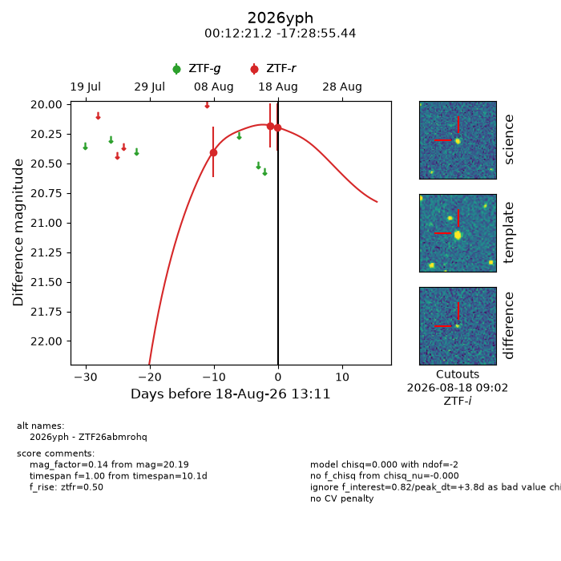
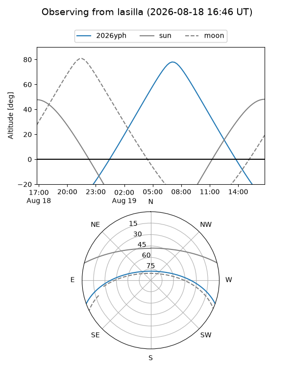
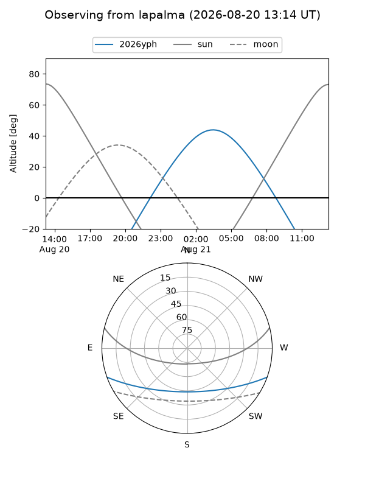
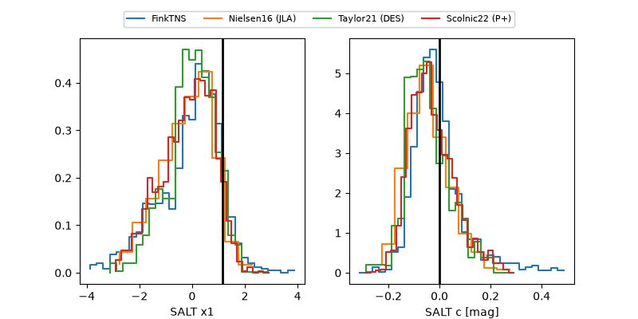

2026yph
Target 2026yph at 2026-08-18 13:15
Aliases and brokers:
FINK-ZTF: ztf.fink-portal.org/ZTF26abmrohq
Lasair-ZTF: lasair-ztf.lsst.ac.uk/objects/ZTF26abmrohq
ALeRCE-ZTF: alerce.online/object/ZTF26abmrohq
YSE-PZ: ziggy.ucolick.org/yse/transient_detail/2026yph
TNS name: wis-tns.org/object/2026yph
Direct TNS query: direct search
alt names
ZTF26abmrohq (ztf,fink_ztf)
2026yph (tns,yse)
Coordinates:
equatorial (ra, dec) = 3.0881,-17.48207
equatorial (HMS+DMS) = 00:12:21.15,-17:28:55.44
galactic (l, b) = (77.8213,-76.79187)
Flags:
TNS type: nan
peak dt: +3.8
Photometry:
last ztfr=20.19
3 ztfr detections
Lightcurve

Visibility


Additional plots
